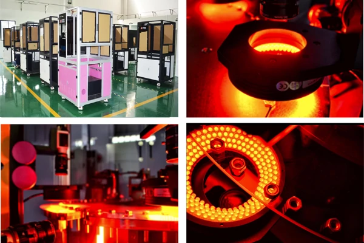
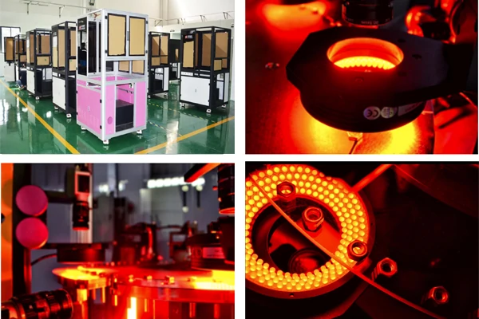

The High Cost of Human Error: Why Sampling Inspection is No Longer Enough
In the high-stakes world of modern manufacturing, quality isn't just a goal—it's a promise to your customers and a cornerstone of your brand reputation. For decades, manufacturers have relied on manual sampling inspection as a primary quality control method. But in an era of massive production volumes and increasingly complex parts, is this decades-old approach still sufficient? The data suggests it's a costly and risky gamble.
We'll explore the hidden expenses of traditional sampling and makes the case for a new standard: 100% automated visual inspection.
The Inherent Risks of Manual Sampling Inspection
Manual sampling involves a human operator checking a random subset of parts from a production batch (e.g., 1 out of every 100 pieces) and extrapolating the results to the entire lot. While better than no inspection at all, this method is fundamentally flawed:
- 1. The Problem of Escapes
The most significant risk. A single defective part that slips through (an "escape") can have catastrophic consequences. Imagine a faulty bearing in an automotive assembly, a micro-crack in a semiconductor, or a contaminated seal in a medical device. The costs associated with a recall, warranty claims, brand damage, and lost customer trust can run into millions of dollars, far outweighing the initial "savings" of manual inspection.
- 2. Human Fatigue and Inconsistency
Human inspectors are not machines. They suffer from fatigue, eye strain, boredom, and fluctuating attention spans. What is caught at the start of a shift might be missed hours later. This inconsistency leads to false accepts (bad parts passing) and false rejects (good parts being discarded), both of which are costly.
- 3. Lack of Traceability
When a defect is found in a sampled batch, it's incredibly difficult to trace it back to its root cause on the production line. Was it a machine tool that malfunctioned two hours ago? A material issue from a specific supplier? With sampling, you lack the comprehensive data to answer these questions quickly.
Quantifying the True Cost of Human Error
The "cost" of manual inspection isn't just the inspector's salary. It's a complex web of direct and indirect expenses:
- Escapes: Cost of recalls, scrap, rework, warranty claims, and lost business.
- Inconsistency: Cost of scrapping good parts (false rejects) and the lost productivity from running flawed processes.
- Speed: Human inspectors simply cannot keep up with high-speed production lines, often becoming a bottleneck.
- Data Poverty: Without data on every single part, you cannot practice true continuous improvement. You're making critical decisions based on incomplete information.
The New Standard: 100% Automated Visual Inspection
The alternative is to move from a reactive, risk-based model to a proactive, quality-assured one. AI-powered visual inspection systems, like those from Openex, are designed to inspect every single part, at production line speeds, with superhuman accuracy.

Here's how it transforms your quality control:
- Eliminate Escapes: Achieve true zero-defect manufacturing by catching tiny, complex, and unpredictable defects that humans would miss.
- Unmatched Consistency & Speed: Our machines perform at peak accuracy 24/7, without fatigue, inspecting thousands of parts per hour without becoming a bottleneck.
- Complete Traceability: Every part is logged. Every defect is categorized and stored. This data is invaluable for pinpointing the root cause of production issues instantly, minimizing downtime, and optimizing your entire process.
- Long-Term ROI: While there is an initial investment, the ROI is clear and compelling. You drastically reduce the costs associated with escapes, scrap, and rework while protecting your brand's reputation.
Ready to transform your quality control and achieve a zero-defect manufacturing standard? Learn more about our solutions and get in touch with our team now.
In the high-stakes world of modern manufacturing, quality isn't just a goal—it's a promise to your customers and a cornerstone of your brand reputation. For decades, manufacturers have relied on manual sampling inspection as a primary quality control method. But in an era of massive production volumes and increasingly complex parts, is this decades-old approach still sufficient? The data suggests it's a costly and risky gamble.
We'll explore the hidden expenses of traditional sampling and makes the case for a new standard: 100% automated visual inspection.
The Inherent Risks of Manual Sampling Inspection
Manual sampling involves a human operator checking a random subset of parts from a production batch (e.g., 1 out of every 100 pieces) and extrapolating the results to the entire lot. While better than no inspection at all, this method is fundamentally flawed:
- 1. The Problem of Escapes
The most significant risk. A single defective part that slips through (an "escape") can have catastrophic consequences. Imagine a faulty bearing in an automotive assembly, a micro-crack in a semiconductor, or a contaminated seal in a medical device. The costs associated with a recall, warranty claims, brand damage, and lost customer trust can run into millions of dollars, far outweighing the initial "savings" of manual inspection. - 2. Human Fatigue and Inconsistency
Human inspectors are not machines. They suffer from fatigue, eye strain, boredom, and fluctuating attention spans. What is caught at the start of a shift might be missed hours later. This inconsistency leads to false accepts (bad parts passing) and false rejects (good parts being discarded), both of which are costly. - 3. Lack of Traceability
When a defect is found in a sampled batch, it's incredibly difficult to trace it back to its root cause on the production line. Was it a machine tool that malfunctioned two hours ago? A material issue from a specific supplier? With sampling, you lack the comprehensive data to answer these questions quickly. - Escapes: Cost of recalls, scrap, rework, warranty claims, and lost business.
- Inconsistency: Cost of scrapping good parts (false rejects) and the lost productivity from running flawed processes.
- Speed: Human inspectors simply cannot keep up with high-speed production lines, often becoming a bottleneck.
- Data Poverty: Without data on every single part, you cannot practice true continuous improvement. You're making critical decisions based on incomplete information.
- Eliminate Escapes: Achieve true zero-defect manufacturing by catching tiny, complex, and unpredictable defects that humans would miss.
- Unmatched Consistency & Speed: Our machines perform at peak accuracy 24/7, without fatigue, inspecting thousands of parts per hour without becoming a bottleneck.
- Complete Traceability: Every part is logged. Every defect is categorized and stored. This data is invaluable for pinpointing the root cause of production issues instantly, minimizing downtime, and optimizing your entire process.
- Long-Term ROI: While there is an initial investment, the ROI is clear and compelling. You drastically reduce the costs associated with escapes, scrap, and rework while protecting your brand's reputation.
Quantifying the True Cost of Human Error
The "cost" of manual inspection isn't just the inspector's salary. It's a complex web of direct and indirect expenses:
The New Standard: 100% Automated Visual Inspection
The alternative is to move from a reactive, risk-based model to a proactive, quality-assured one. AI-powered visual inspection systems, like those from Openex, are designed to inspect every single part, at production line speeds, with superhuman accuracy.
Here's how it transforms your quality control:
Ready to transform your quality control and achieve a zero-defect manufacturing standard? Learn more about our solutions and get in touch with our team now.